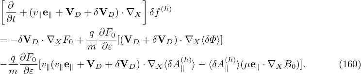
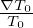
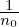
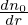
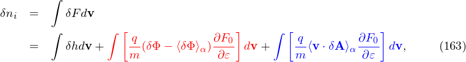
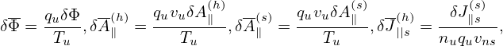
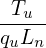
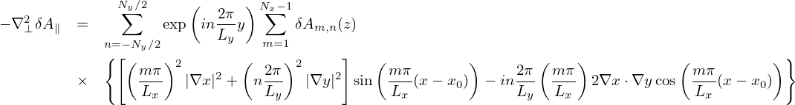
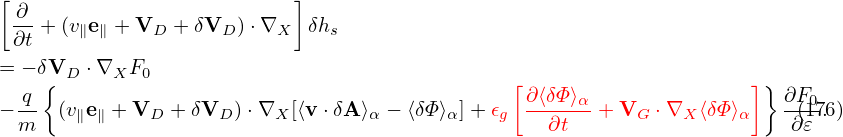

![[ ∂ ]
∂t + (v∥e∥ + VD +δVD ) ⋅∇X δh
[( ) ]
+-q ∂F0- ∂-+ v∥e∥ + VD + δVD ⋅∇X ⟨v∥δA ∥⟩α
m ∂𝜀 ∂t ( )
-q ∂F0-
+m ⟨v∥δA∥⟩α[(VD + δVD )⋅∇X ] ∂𝜀
= − δVD ⋅∇XF0
q [ ∂ ⟨v∥δA∥⟩α ] ∂F
−-- −--------- − (v∥e∥ +VD + δVD )⋅∇X ⟨δΦ⟩α ---0, (145)
m ∂t ∂𝜀](nonlinear_gyrokinetic_equation153x.png)
Note that the coefficient before ∂F0∕∂𝜀 in Eq. (136) involves the time derivative of ⟨δϕ⟩α, which is problematic if treated by using explicit finite difference in particle simulations (I test the algorithm that treats this term by implicit scheme, the result roughly agrees with the standard method discussed in Sec. 6). It turns out that ∂⟨δΦ⟩α∕∂t can be eliminated by defining another gyro-phase independent function δf by
|
| (139) |
Substituting this into Eq. (136), we obtain the equation for δf:
[Equation (141) corresponds to Eq. (A8) in Yang Chen’s paper[2] (where the first minus on the right-hand side is wrong and should be replaced with q∕m; one q is missing before ∂(v ⋅ δA)∕∂t in A9).]
Similar to the method of eliminating ∂⟨δϕ⟩α∕∂t, we define another gyro-phase independent function by
|
| (142) |
Most gyrokinetic simulations approximate the vector potential as δA ≈ δA∥e∥. Let us simplify Eq. (147) for this case. Then ⟨v ⋅ δA⟩α is written as
|
| (143) |
Then expression (142) is written as
|
| (144) |
Then Eq. (141) is written in terms of δh as
|
| (148) |
where B0(x) = B0(X + ρ) with ρ = ρ(X,𝜀,μ,α). Since the scale length of B0 is much larger than the thermal Larmor radius, B0(x) ≈ B0(X) and hence v∥ can be approximated as a constant when gyro-angle α changes. Then v∥ can be taken out of the gyro-averaging in expression (143), yielding
|
| (149) |
Using this, the term related to δA∥ in (147) can be further written as

Define δf(h) by
 | (153) |
where δA∥(h) is a part of δA∥:
|
| (154) |
with δA∥(s) determined by an evolution equation:
|
| (155) |
Following the same procedure in Sec. 4.2, we obtain the following evoluation equation for δf(h):
Next, consider the special case that F0 is a local Maxwellian given by|
| (157) |
Then ∂F0∕∂𝜀 and ∇XF0 are written as
|
| (158) |
and
where κn = −, and κT = −. Consider the case that F0(X,𝜀) is independent of 𝜃 and α, then κn and κTare written as κn = κn∇r and κT = κT∇r, where κn ≡−, κT ≡−, and r is chosen to be the minor radius at the low field side.Using the above results, Eq. (156) is written as
The weight of the j th marker is defined by
|
| (161) |
where V pj0 is the phase space volume occupied by the jth marker. Multiplying both sides of Eq. (160) by V pj0, and noting that d(V pj0)∕dt = 0, we obtain
where use has been made of ∇⟨δΦ⟩ = ⟨∇δΦ⟩ and ∇⟨δA∥(h)⟩ = ⟨∇δA∥(h)⟩.Note that ∇≡ ∂∕∂X. Using x = X + ρ, we obtain
Also note that ⟨δΦg⟩ is not known on X grid (it is known on random markers). So, to calculate ∂⟨δΦg⟩∕∂X, we need to exchange the operation order:
|
| (164) |
For notation ease, the subscripts g and p will be dropped in the following.
In field-aligned coordinates (x,y,z),  can be written as
|
| (165) |
Note that the direction of ∂r∕∂x at 𝜃 = −π is different from that of ∂r∕∂x at 𝜃 = +π. This implies that ∂δΦ∕∂x is a non-periodic function of 𝜃. Similarly, ∇y is also a non-perioidic functon of 𝜃. Then both ∂δΦ∕∂x and ∇y are discontinuous across the 𝜃 cut (𝜃 = ±π).
The gyro-average of expression (165) is written as
|
| (166) |
where we approximate ∇x, ∇y, and ∇z as constants when performing the gyro-averge since they are determined by the equilibrim magnetic field, which is nearly constant on the Larmor radius scale. As is mentioned above, ∇y is not continuous at the 𝜃 cut. Do we need to worry about this? We do not. This is because we must stick to the same branch when we perform gryo-average on it, and hence ∇y is always continous. Then, do we need to worry about the disconunity of ∂δΦ∕∂x across the 𝜃 cut when performing the gyro-averge on it? We do not either. The reason is the same: we must stick to a single branch. The disconunity is just irrelevant here. The discontinuity only manifest itself when we need to infer value on 𝜃 = −π from that on 𝜃 = +π (vice versa), i.e., when across branch communication is explicitly needed. In TEK, the field equations are not solved at 𝜃 = +π and hence the field values are not directly obtained. Instead, the field values at 𝜃 = +π are infered from the field values at 𝜃 = −π using the coninuity of ∇δΦ. At the 𝜃 cut, the continuity of ∇δΦ requires
|
| (167) |
where the superscript “+” and “−” refer to the location 𝜃 = +π and 𝜃 = −π, respectively. Dotting the above by ∇x, we obtain
|
| (168) |
which is used in TEK to infer the value of ⟨⟩+ from that of ⟨⟩−.
Similarly, for ∂δA∥(h)∕∂x, we obtain:
|
| (169) |
|
| (170) |
Using these, Eq. (162) is written as
![[ ( 2 ) ]
dwj- = δVD ⋅∇ ψ dr-κn + mv--− 3 κT Vpj0F0
dt [ dψ 2T0 2 ]
-q ∂δΦ- dX-′ ∂δΦ-dX-′ ∂δΦ- dX′-
− T ⟨ ∂x ⟩ dt ⋅∇x + ⟨∂y ⟩ dt ⋅∇y + ⟨ ∂z ⟩dt ⋅∇z Vpj0F0
( (h) (h) (h) )
-q ( ∂δA∥-- dX- ∂δA∥-- dX- ∂δA∥-- dX- )
+ T v∥ ⟨ ∂x ⟩dt ⋅∇x + ⟨ ∂y ⟩dt ⋅∇y + ⟨ ∂z ⟩dt ⋅∇z Vpj0F0
q
− --⟨δA(∥h)⟩(μb ⋅∇B0 )Vpj0F0, (171)
T](nonlinear_gyrokinetic_equation188x.png)
|
| (172) |
Then, a typical term of the above is written as
The pullback:
Using
|
| (177) |
i.e.,
|
| (178) |
To get the normalizing factor, consider only the contribution from E ×B drift. Then a typical term is written as
The magnetic fluttering term is written as

Also to get the normalizing factor needed in the code, consider a typical term:
where Tu∕(quvuBnLn) is the normlizing factor I need when coding.
The basic terms involved in the above expressions can be written as
|
| (184) |
|
| (185) |
|
| (186) |
In terms of δA∥(h), the Ampere’s law is written as
|
| (187) |
where δJ||s(h) is the parallel current carried by the distrbution funciton δfs(h), where the subscript s is species index (do not confuse it with the superscript s of δA∥(s)). Here δA∥(s) has been moved to the right-hand side since its value is already known when we solve the Ampere’s law for δA∥(h).
Compared with the p∥ formulation, the improvement of the above procedure is that a part of δA∥ is solved from an evolution equation (which is chosen by some physical consideration) and the remainder is solved from the Ampere’s law. We hope that the former is the dominant part of δA∥ so that the remainder solved from the Ampere’s law is small and hence the cancellation problem (of the Ampere’s law) become less significant. While a wise choice of the evolution equation for δA∥(s) may help ensure that δA∥(s) remain dominant over the entire simulation duration, we have another simple way to make δA∥(s) remain dominant: collect both δA∥(s) and δA∥(h) into δA∥(s) at the end of each time step:
|
| (188) |
Then, to make δA∥ untouched (so that electromagnetic field remain unchanged), we set δA∥(h) to zero:
|
| (189) |
Here “old” and “new” refers to before and after the re-spliting, respectively. Note that this re-spliting is made at the end of each time step and does not correspond to any time evolution. This re-splitting keeps the value of δA∥ untouched and hence does not influence the electromagnetic field. Meanwhile, the definition of Eq. (153) indicates that, for a given δf, the re-splitting will make the value of δf(h) increase by Δ = ⟨v∥δA∥old(h)⟩ α since δA(h) is reduced by δA old(h). In other words, to keep δf unchanged, which is what we need to ensure, we must add Δ to δf(h):
|
| (190) |
After the operations in (188) (189) and (190), both the electromagnetic field and the distribution function δf remain unchanged. Therefore we do not change any physical process of the system. Hence the above operations can only have effects on numerical round-off errors. As mentioned above, we hope the numerical effects will reduce the cancellation errors.
Define
|
| (191) |
where qu,nu,Tu,vu are chosen units, vns is a velocity unit for a species, whose value is different among different species [vns = Ln∕(2π∕(Bn|qs|∕ms))]. In TEK, vu is chosen as vns of the first ion species.
Then the Ampere’s law (187) is written as
|
| (192) |
where ωpu2 = nuqu2∕(mu𝜀0), mu is a mass unit, and use has been made of μ0 = 1∕(c2𝜀0).
δf pullback in Eq. (190) is now written as (for the case of F0 being Maxwellian):
| = −b ⋅∇δΦ, |
where t = t∕tu, tu = Ln∕vu. Then the above equation is written as
|
| (194) |
i.e.,
|
| (195) |
The Laplacian operator is approximated as
|
| (196) |
To approximate δA∥ of zero boundary condition A∥(x = 0) = A∥(x = Lx) = 0, the sine expansion can be adopted. In the y direction, full Fourier expansion is needed. Then, at each value of z, A∥(x,y,z) is approximated by the following two-dimensional expansion:
|
| (197) |
Using this expression, Eq. (196) is written as
 | (199) |
into expression (198) gives
|
| (201) |
In simulations, the seemingly trivial thing on how to split the distribution function is often considered to be a big deal. Separating the perturbation from the total distribution function gets the famous name “δf particle method”, in contrast to the conventional particle method which is now called full-f particle method.
In the above, the perturbed part of the distribution function, δF, is split at least three times in order to (1) simplify the gyrokinetic equation by splitting out the adiabatic response; (2) eliminate the time derivatives, ∂δϕ∕∂t, and (3) ∂δA∕∂t, on the right-hand. To avoid confusion, I summarize the split of the distribution function here. The total distribution function F is split as
 | (202) |
where F0 is the equilibrium distribution function and δF is the perturbed part of the total distribution function. δF is further split as
|
| (203) |
where δh satisfies the gyrokinetic equation (147) or (152). In PIC simulations, δh is evolved by using markers and its moment in the phase-space is evaluated via Monte-Carlo integration.
The integration of the red and blue terms can be approximated analytically in terms of δΦ and δA. But this can also be evaluated using markers, i.e., using Monte-Carlo method, to avoid the inaccurate cancellation between the integration of these parts and the integration of δh.
Another issue is how to accurately solve for δΦ from the Poisson equation and δA from the Ampere’s law. To make the solution accurate, one need to have a large term that is explictly dependent on δΦ and δA to appear on the left-hand side of the equations and small terms appear on the right-hand side.
The red term in expression (203) gives “the polarization density” when integrated in the velocity space (discussed in Sec. 6). The reason for the name “polarization” is that (δΦ −⟨δΦ⟩α) is the difference between the local value and the averaged value on a gyro-ring, expressing a kind of “separation”.
are also needed to be evaluated using Monte-Carlo markers.
This term is moved to the left-hand side of the Poisson equation and is utilized in solving the Poisson equation. The blue term also has an explicit dependence on δA, which, however, will cause numerical problems in particle simulations if it is moved to the left-hand side of the Ampere equation. This is the “cancellation problem” in gyrokinetic simulations discussed in Sec. 4.5.
The blue and red terms in the above expression explicitly depends on the perturbed field. The velocity integrations of these two terms can be performed analytically. However, in some cases, the phase space integration of the blue terms must be evaluated using markers, i.e., using Monte-Carlo method, to avoid the inaccurate cancellation between the integration of these parts and the integration of δh (the latter is computed using Monte-Carlo method). When will the inaccurate cancellation is significant depends on the problem being investigated and thus can only be determined by actual numerical experiments. Electromagnetic particle simulation experiments indicate that the parallel current carried by the blue term must be evaluated via Monte-Carlo method, otherwise inaccurate cancellation between this term and δh will give rise to numerical instabilities.
Consider the approximation δA ≈ δA∥e∥, then the blue term in Eq. (203) is written as
|
| (204) |
Notice that v∥ can be taken out of the gyro-averaging. Then the above equation is written
|
| (205) |
If we neglect the FLR effect, then the above expression is written
|
| (206) |
The zeroth order moment (number density) is then written as
 | (207) |
which is zero if F0 is Maxwellian. Next, consider the parallel current carried by distribution (206), which is written
|
| (208) |
If F0 is a Maxwellian distribution given by
|
| (209) |
then
|
| (210) |
Then expression (208) is written
|
| (211) |
Working in the spherical coordinates, then v∥ = v cos𝜃 and dv = v2 sin𝜃dvd𝜃dϕ. Then expression (211) is written

|
| (213) |
where the c∕ωps is often called the skin depth of species “s”. The skin current can also be written as
|
| (214) |
where ρ = ∕Ω is the thermal Larmor radius.